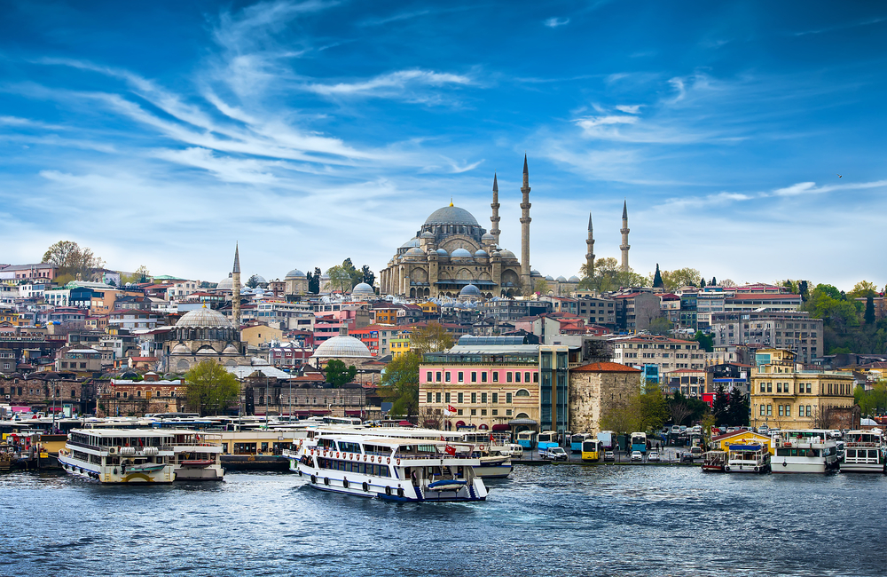
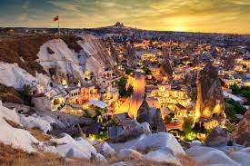

Istanbul
Istanbul, dat samen unieke historische en culturele rijkdommen biedt, heeft veel verschillende beschavingen gehost met zijn geografie verspr eid over twee continenten. Deze unieke stad die wordt bewonderd door h aar charmante natuur en de aantrekkelijke sfeer is ook het symbool van het dynamische en moderne stadsleven. Istanbul heeft een multiculturele textuur en een levendige sfeer die het verleden en de toekomst samensmelt in een enkele pot die bij elke stap een gevoel van universele geschiedenis geeft. In Istanbul heeft elke regio een ander mysterie en met zijn 2500 jaar geschiedenis, unieke natuur, bruisend nachtleven, eten, cultuur en nog veel meer functies wachten om ontdekt te worden. Dus nu is het tijd om Istanbul te verkennen.
©Ontdekturkije
Adana
Verkeersvrije boulevards, industriële buitenwijken en moderne winkelcentra zijn precies wat je zou verwachten van een van de grootste steden van Turkije - en Adana schiet niet tekort. Te midden van het chaotische stadsbeeld zijn er schilderachtige parken aan de rivier, moskeeën en traditionele bazaars, waar kleine restaurants de lokale specialiteit serveren: Adana-kebab.

©HaberTurk
Nevsehir
Een stad die ik wilde zien toen ik in Cappadocië was, was Nevsehir. Het is het belangrijkste knooppunt voor alle omliggende dorpen en lijkt om het middelpunt van alles te zijn. We sprongen in de auto, vertrokken en binnen het uur arriveerde in een bruisende stad. Een ding dat we echter niet deden voordat we vertrokken, was zoeken naar precies uit wat er te doen was. We hadden niet gedacht dat dit zou gebeuren een probleem zijn, want er zouden zeker tekenen zijn en we kunnen spreken aan de lokale bevolking. Binnen twintig minuten rijden door de stad, we kwamen tot de conclusie dat de stad niets aparts te bieden had van winkels en parken. We kregen echter ongelijk toen we het zagen een bord met het kasteel van Nevsehir.
